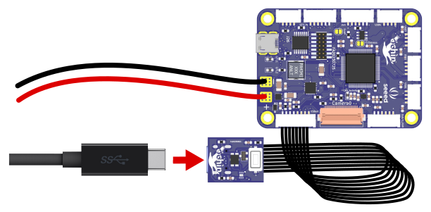

Connect the ochin_CM4v2 to your PC using a USB Type-C data cable.
You should hear a connection sound, though no device will appear initially.
Launch the official rpiboot software. Once the necessary drivers are loaded, a new storage device will appear.
You can now flash the Raspberry Pi image to this memory device, just as you would with a microSD card.

At this point, the CM4 module is powered, connected to your PC, and recognized as a storage device.
Flashing the image is the same process as with a microSD card on other Raspberry Pi models.
The recommended method is to use the official Raspberry Pi Imager software, which allows you to select the desired image and preconfigure settings such as login credentials, WiFi connection, and other useful parameters.
Once the Raspberry Pi CM4 image as been flashed to the eMMC it is possible to reboot the board and start the OS. Since the USB Vbus it is used to switch the bus between the USB type-C port and the USB HUB, it is important that the USB type-C cable is removed from the board after the flash of the eMMC.
On the Raspberry Pi CM4 the USB is disabled by default. In oder to use the USB bus it is necessary to enable it inside of the "boot/config.txt" file, adding the following line at the end:
dtoverlay=dwc2,dr_mode=host